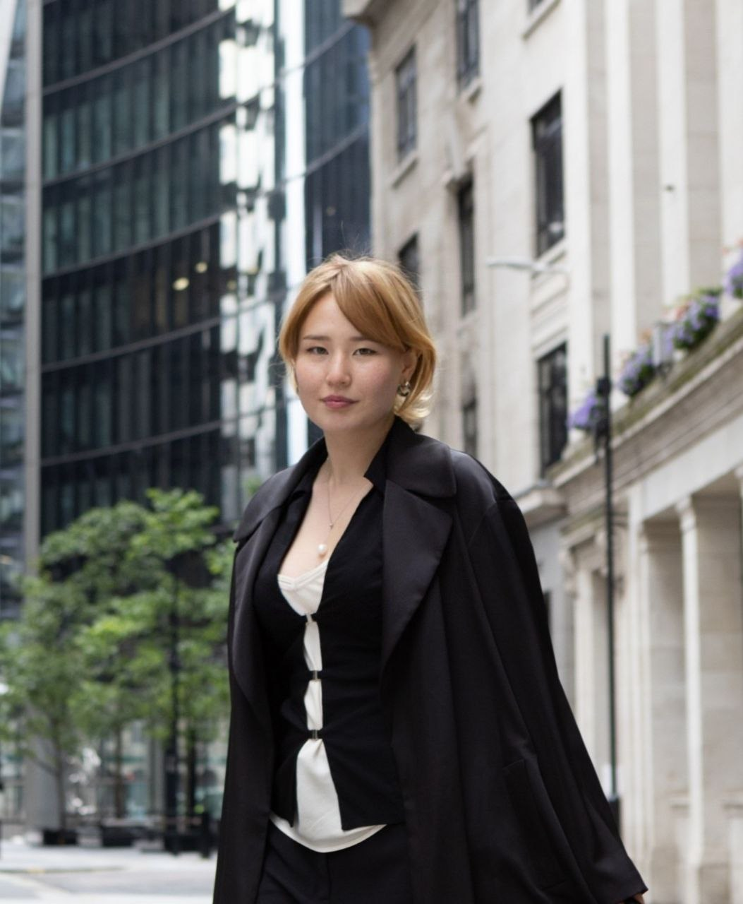
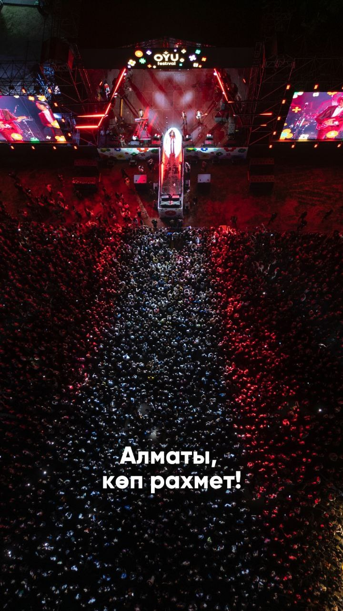
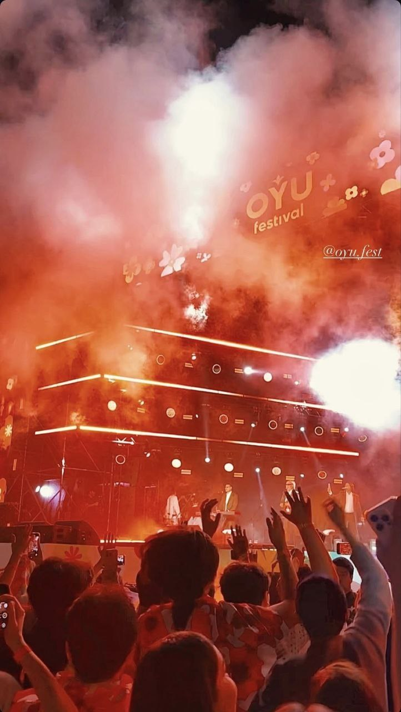
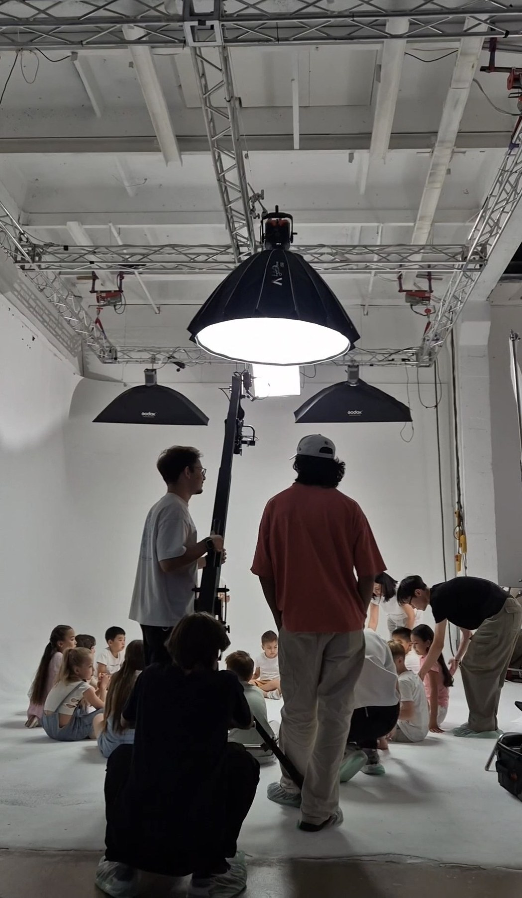
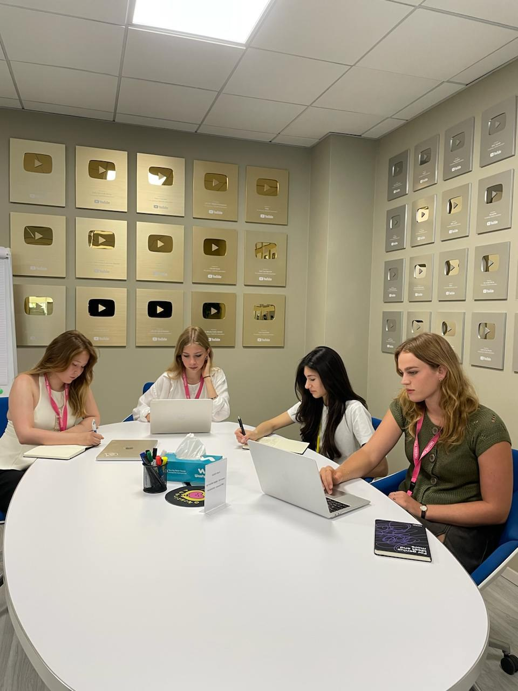
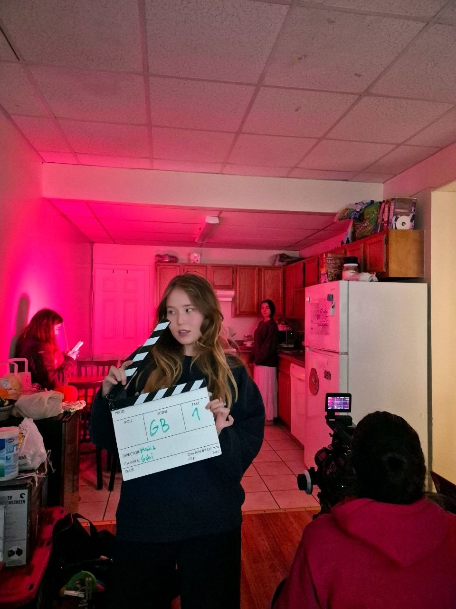
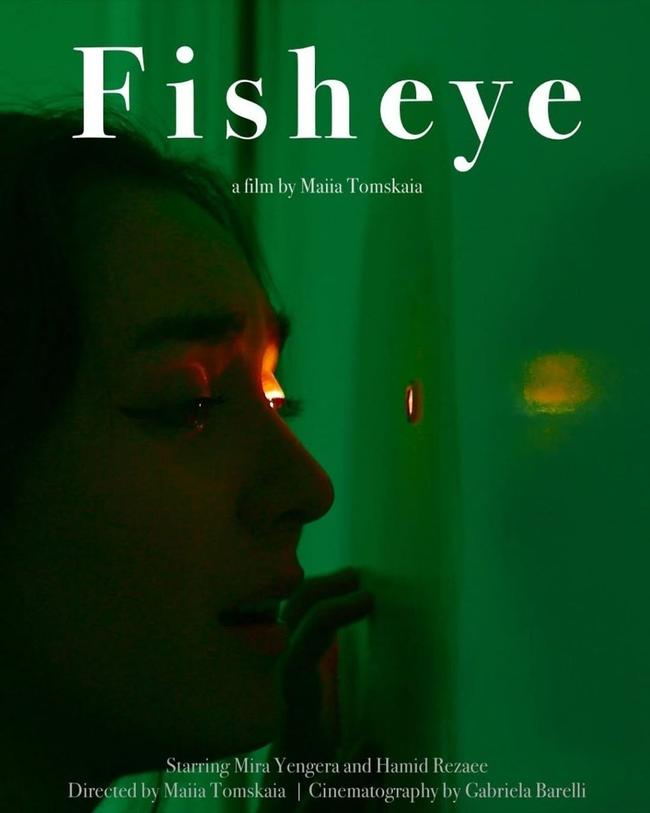
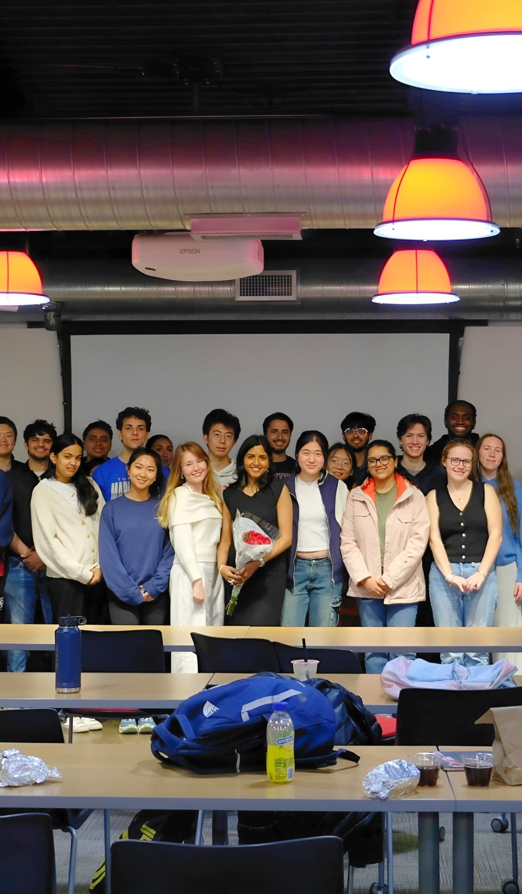
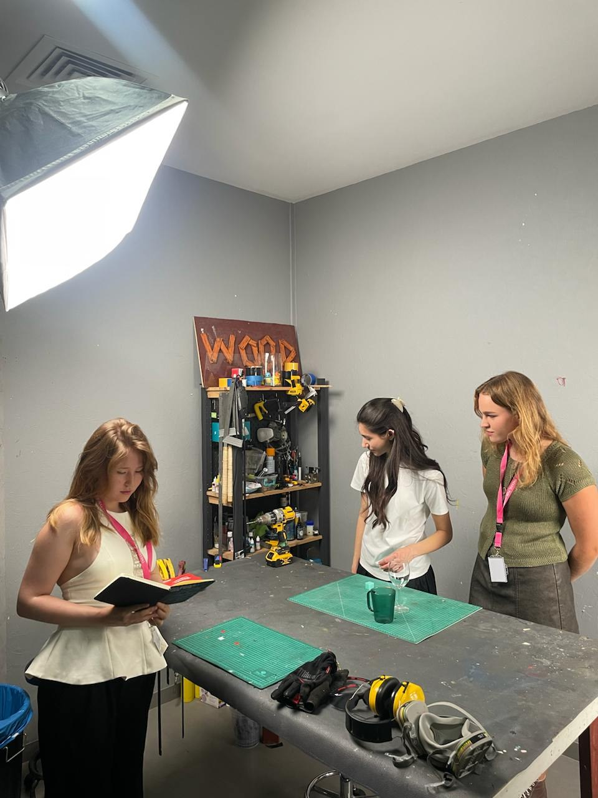

Product & UX
User Interviews · UX/UI Testing · A/B Testing · Roadmapping · Feature Prioritization · Prototyping · Jira · Asana · Miro
Cornell · Product · Marketing · Media
Raised in Yakutsk, the world’s coldest city, and shaped by my Siberian Indigenous heritage, I am driven to build ideas that create meaningful impact beyond borders.
At Cornell’s Dyson School, I study Applied Economics and Management with a concentration in Marketing. My work brings together product management, branding, media production, and entrepreneurship to create experiences that connect with people and make a positive global impact.

User Interviews · UX/UI Testing · A/B Testing · Roadmapping · Feature Prioritization · Prototyping · Jira · Asana · Miro
Brand Positioning · Audience Segmentation · Market Research · Competitor Analysis · Campaign Strategy · Funnel Analysis · KPI Tracking · SMM
Producing · Directing · Scriptwriting · Storyboards · Shot Lists · Lookbooks · Call Sheets · Budgeting · Production Scheduling · Sound Mixing
Python · SQL · Excel Models · Tableau · KPI Dashboards · Adobe · Canva · Figma · AI Editing
Film Production & SMM Intern
Marketing Strategy Intern & Producer Assistant
Marketing Intern
Strategy Intern


QARA Studios · Film Production Intern & Stage Assistant
Interned with OYU Fest, the largest music festival in Kazakhstan, featuring local artists and attended by 10,000+ people.
Managed a 9-hour schedule for 13 bands and tech crew, coordinating timing changes in stage screens, lighting, song, and LED systems. Adjusted large banner screens to maximize visual appeal and audience visibility, while also overseeing crew logistics.
Interned with QARA Studios, a film agency, contributing to the production of a commercial for Kaspi Bank in celebration of Children’s Day.
Coordinated an 8-hour commercial shoot, managing 10 actors and a 25-person team of production, art direction, and styling.



Leadership & Creative Work
01
Directed and produced Fisheye, an original short film presented to 400+ audience members, while leading a 15-person cast and crew and managing script development, scheduling, shot lists, budgets, call sheets, and locations.
02
Led Cornell’s largest student entrepreneurship ecosystem, running weekly events with 90+ participants, managing a 20-member board, distributing $15K+ in funding, and helping 6 student-led startups get into Y Combinator (2025 batch)
03
Raised and donated $12,000 in 2 months by selling physical paintings of Pleistocene Era animals to mitigate climate change. Got 5,000+ YouTube views and 3% engagement rate on my independently produced ecological documentary shot across the U.S. Organized UN Global Goals Week, showcasing 4 years of environmental work and reaching 850+ likes on my UNICEF article



Contact
For media, product, marketing, film, startup, or culturally driven creative opportunities, reach me here.